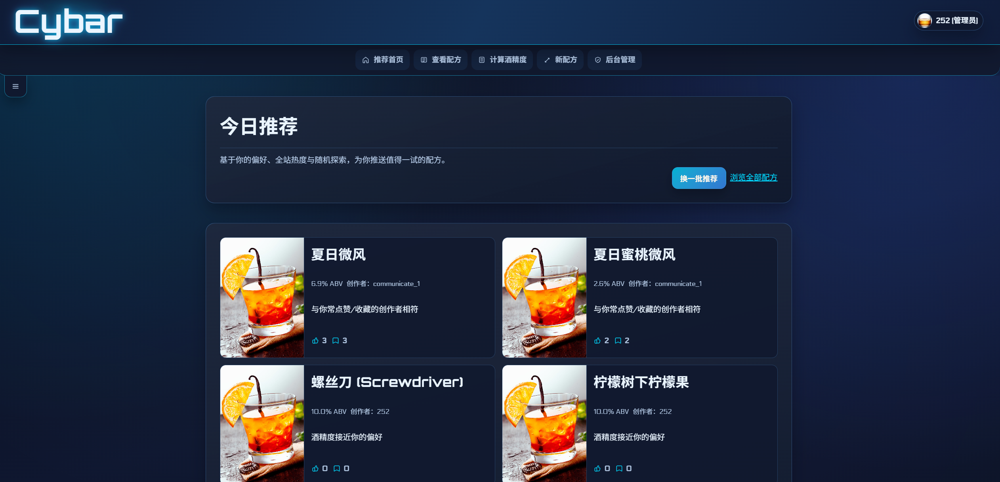
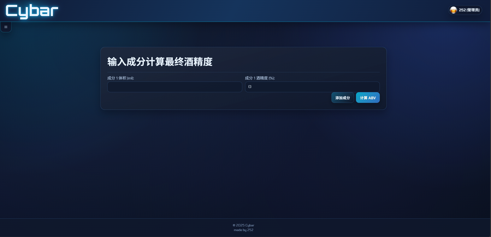
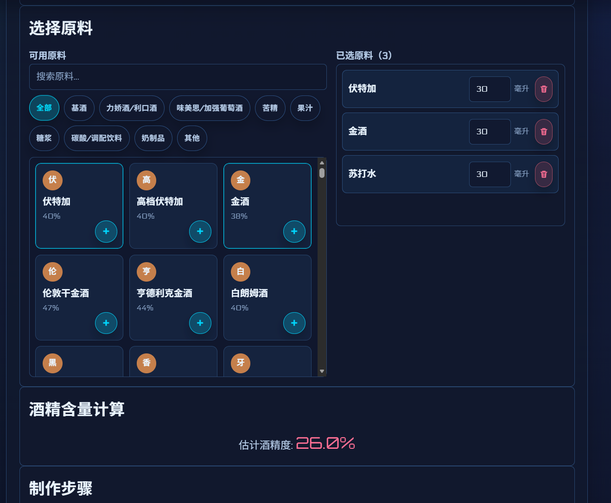
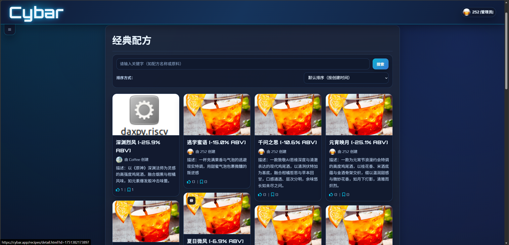
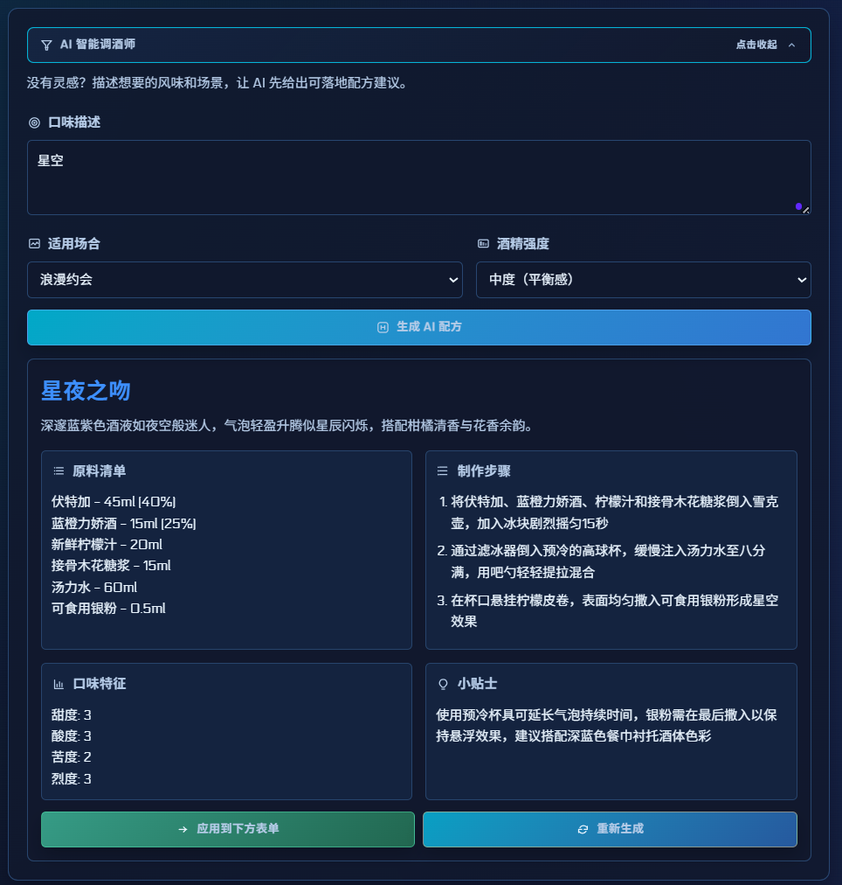

Cybar
调酒，进入智能世代。
由现代架构驱动的专业酒谱平台。深度整合 AI 推荐、多成分精准测算与 3D 实验室视觉，打造数字调酒新标准。

专业测算引擎
精打细算。
精打细算。
精确到每一滴。
真正的 Pro 级 ABV (酒精度) 计算器。为专业配方研发与高端调酒提供绝对可靠的数据支撑告别粗略的估算。
- 多成分混合计算：支持添加无限多种原料成分，动态匹配各种密度与度数。
- 实时数据反馈：输入毫升或盎司后即时显示计算结果，前端即刷即切。

数字配方工坊
看得见的灵感，
看得见的灵感，
触手可及。
在你的屏幕上打造属于你自己的特调。我们构建了一个可视化的配方创建器，让你在创造饮品时犹如在真实的实验室中工作。
- 可视化原料架：直观的分类标签和极速搜索库，涵盖基酒、利口酒、果汁和苦精等百种原料。
- 配方即刻保存：实时酒精度测算，满意后直接一键存档至个人云端档案。

配方库引擎
秩序之美，
秩序之美，
一览无余。
管理繁杂的酒谱从未如此轻松。无论是经典配方还是个人独创，一切都被井井有条地收纳在你的数字酒架中。
- 智能多维检索：支持按名称、创建者、甚至精准的酒精度范围快速筛选你所需的酒谱。
- 全览详情卡片：包含完整配料表、精准到每一步的教学说明和酒精度综合分析模块。
- 内置经典酒谱：附带庞大的初始配方库，包含从马提尼到血腥玛丽的传奇特调，随用随取。

AI大模型辅助
灵感枯竭？
灵感枯竭？
交给智能大脑。
接入先进大语言模型的私人助理，为你的调酒创作注入革命性的生产力飞跃。
- Deepseek 深度集成：原生接入强大 AI 模型。只需向系统报告你持有的手头酒品与果汁，即可秒级获得最契合的混合建议。
- 语义灵感引擎：不光是机械的原料拼凑，AI 会结合口味偏好与调酒理论，为你生成富有层次感的全新酒谱档案。

社区互动网络
共享你的，
共享你的，
每一滴热爱。
这不是一座孤岛，而是一个由调酒爱好者、鉴赏家与创新者组成的活跃社区中心。
- 专属用户体系：构建个人档案，收藏你的最爱。所有的互动都将被沉淀为你的数字偏好卡。
- 多维互动评价：为每一杯特调打出分数，在评论区留下味蕾体验，与其他酿造者深度切磋。
- 个性化协同过滤：我们的统计算法会根据你的点赞、收藏级联检索其余用户的相同喜好，不断给你推新。

ADMIN DASHBOARD
幕后中枢，
幕后中枢，
掌控一切。
为管理员提供一处不可思议的控制中心。它兼具美观与强大，数据一目了然。
- 可视化统计面板：使用 Chart.js 构建的响应式图表，直观洞察用户偏好、配方增量以及访问趋势。
- 分级权限架构：完善的 RBAC 角色权限控制，保障生态的安全与秩序。
- 全域资源管理：从管理危险评论到清理错误配方档案，管理界面赋予核心权限极速操作的可能。

满载前沿技术。
为了极致的性能与顺滑的体验，我们选用的架构。
Node.js + Express.js
后端采用超轻量级无阻塞的事件驱动架构，为毫秒级的 API 响应奠定坚实基础。
MySQL 数据库
通过高性能的 MySQL2 驱动链接，稳健承载千万级的评论、用户偏好与复杂酒谱标签关联数据。
Vanilla JS + Chart.js
不依赖笨重的前端框架以致代码臃肿，我们回归原生并使用现代 API 和渲染类库直接打造流畅的图表和 3D 转换体验。